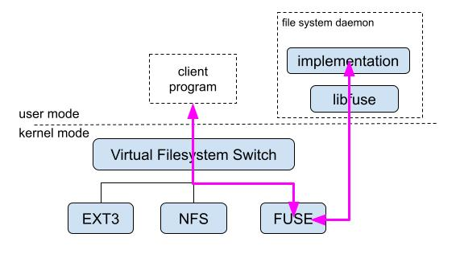

File systems in USEr mode
Mark Kampe
Introduction
Since the earliest Operating Systems implementations, their most fundamental
services have been:
- the creation and management of processes
- the creation and persistence of the data on which they operate
This second set of services included both APIs for file access, and implementations
of the file systems (generally on Direct Access Storage Devices) in which
they could be safely and efficiently stored.
These were originally implemented as part of the OS kernel, but it is now
possible to implement file systems in user-mode programs, making those implementations
much easier, and thereby enabling the creation of a wide range of new services.
Motivations
While file systems have traditionally been implemented as part of the
OS Kernel, it is no longer clear why this should be necessary:
- File system implementations may need to do a great deal of
performance-critical I/O to direct access storage
devices. Most operating systems now provide high performance
asynchronous I/O services for use by user-mode programs.
- File systems will be asked to check and enforce authorization
rules (for what operations a given user can perform on a given
object). These decisions are dependent on user authentication,
and knowing which user is making each request. But
given such identification, a file system can make and enforce
access control rules with no further use of system services.
- Beyond these, there is little reason that a file system implementation
should require access to any in-kernel data or services.
Implementing and supporting a file system (that runs within the operating
system kernel) can be extremely difficult:
- The services (e.g. for synchronization and memory management) are
complex and quite different from those used by user-mode processes.
- The tools for debugging a running OS kernel are nowhere nearly as
convenient or powerful as those for user-mode processes.
- The performance and correctness requirements for kernel code are much
stricter than those for most user-mode software, and the review processes
to get new kernel code accepted are correspondingly much more demanding.
- Updating kernel software (e.g. for bug fixes or new features) may involve
installing a new OS version and rebooting the system ... much more
difficult than simply loading and running a new program.
For all of these reasons, it is much simpler and easier to implement some
file systems as user-mode programs. Providing this capability makes it
possible for a much wider range of people to implement and distribute a much
wider range of file-system-like services.
Kernel-FUSE Integration
Most operating systems have been designed to support many alternative
file systems, allowing each file system implementation to be a plug-in
(usually dynamically loadable) module. Each file system implementation
supports the same basic system calls (e.g. create/unlink, open/close,
read/write, mkdir/rmdir), but uses different on-disk
representations for this data (e.g. EXT3, NTFS, ISO9660) or uses
remote access protocols (e.g. NFS) to forward those requests
to remote servers.
User-mode file system (FUSE) implementations can be enabled
by another such plug-in file system implementation. The FUSE
file system plug-in acts as a router, translating file access system
calls into messages that will be sent to some user-mode process that
knows how to implement them.

On the other side of those messages, a new library (libfuse) has
been developed to:
- facilitate the registration of new file system implementations,
and the mounting of their instances
- receive request messages from the kernel FUSE module
- translate them into subroutine calls (to a local implementation)
- translate the returned results back into messages to be sent bac to the kernel FUSE module,
which will, in turn, deliver those results back to the requesting process.
FUSE Examples
Some traditional (on-disk) file systems (e.g. Windows NTFS) have
been implemented as FUSE daemons, but FUSE is more
commonly used for less-traditional services.
FUSE wrappers have made it possible for ordinary programs to
use the standard POSIX APIs to:
- access individual files in standard containers (e.g. .tar.gz files)
- access remote files via a wide range of protocols (e.g. FTP, SSH, S3).
- read and write data in scalable, high performance, clustered file systems
(e.g. GlusterFS, CephFS)